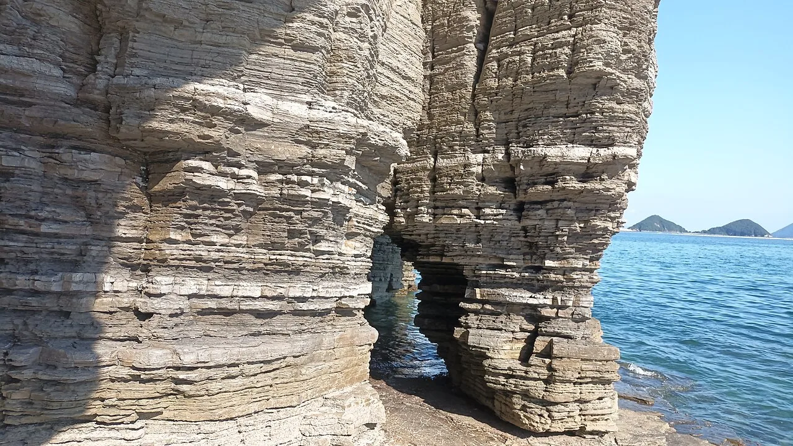
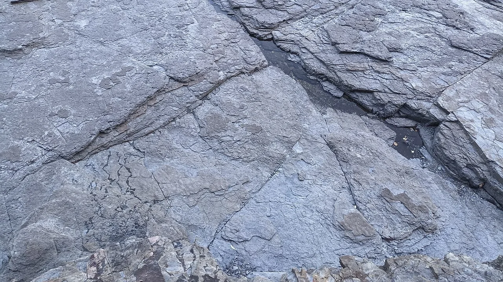
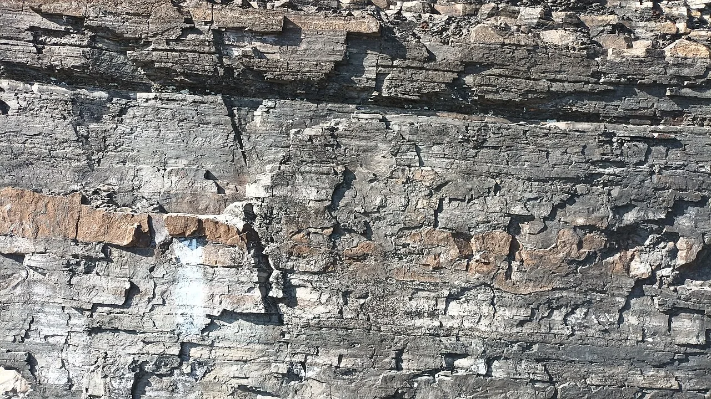
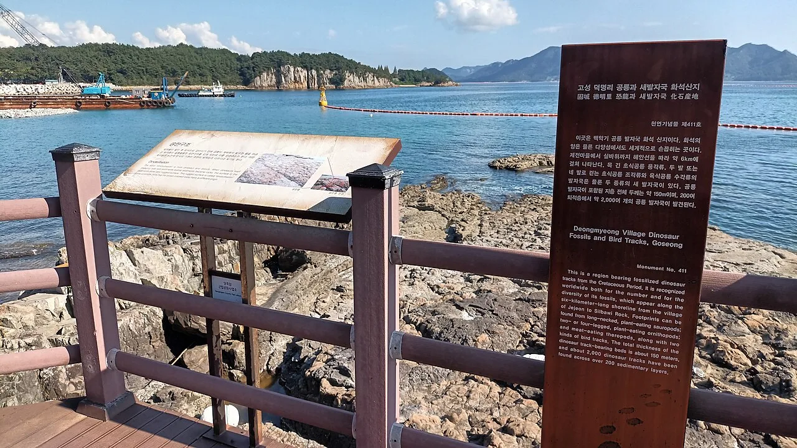
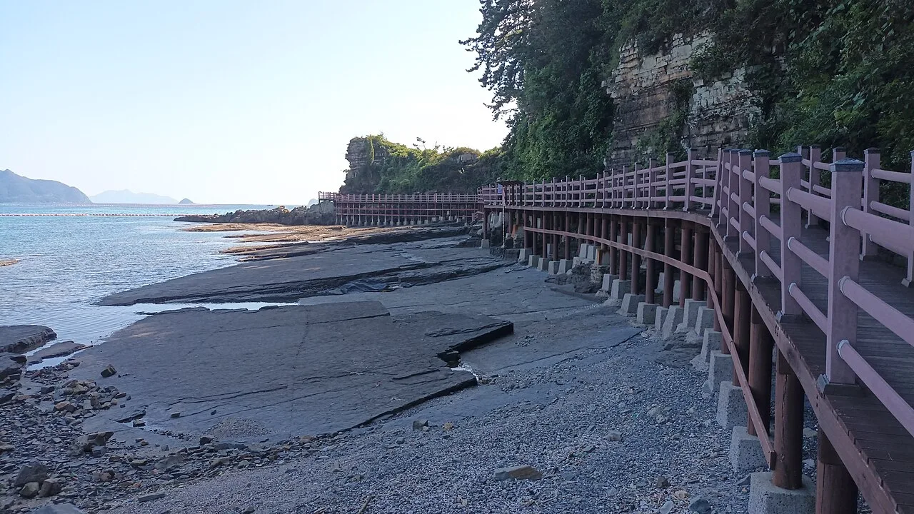
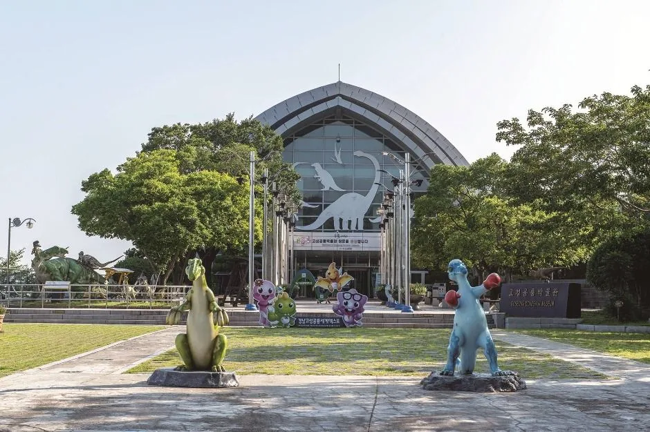
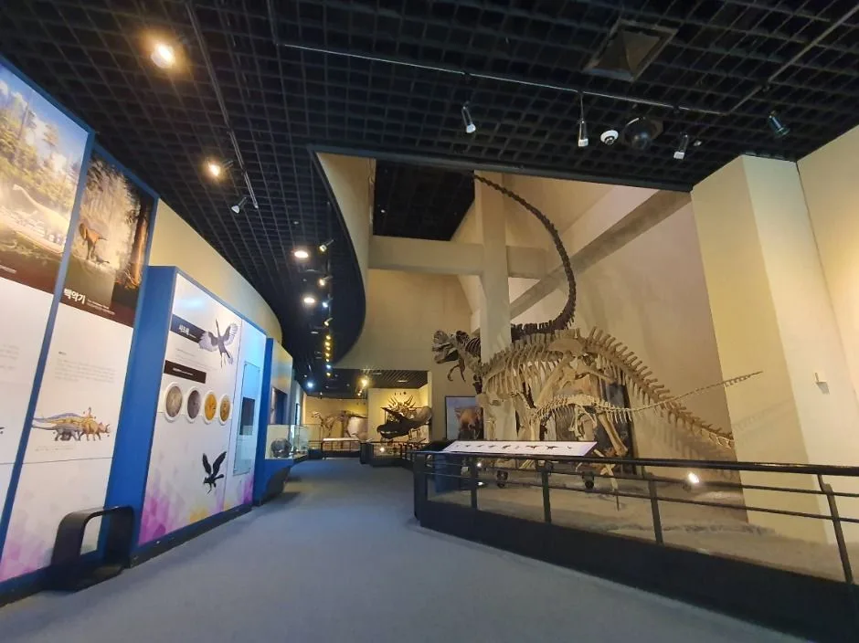
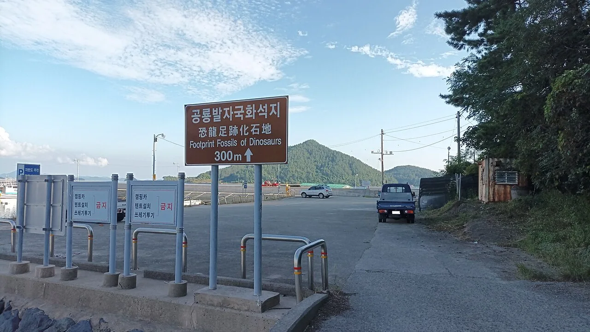
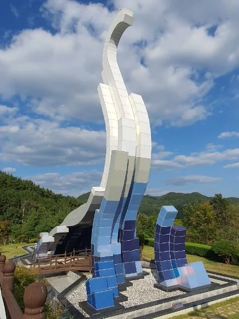

▲ 밥상다리처럼 여러 갈래로 파인 해식동굴이 상족암이라는 이름의 유래가 됐다 ⓒ Wikimedia Commons (KMJ0521)

▲ 암벽 아래가 여러 갈래로 깊게 파여 밥상다리(床足) 모양을 이룬다고 해서 '상족암'이라는 이름이 붙었다 ⓒ Wikimedia Commons (Dittwjfsdgkvkdjg)
1. 이름부터 지형을 담았다 — 상족암이란 어디인가
상족암(床足岩)은 경남 고성군 하이면 덕명리 해안에 자리한 기암절벽입니다. 파도가 오랜 세월 깎아낸 암벽 아래쪽이 여러 갈래로 깊게 파여 마치 밥상다리를 늘어놓은 모양을 하고 있다는 데서 이름이 유래했습니다. 지역에 따라 '쌍족암' 또는 '쌍발이'라고도 부릅니다.
1983년 11월 10일 고성군에 의해 군립공원으로 지정됐고, 지금은 상족암군립공원이라는 이름으로 관리됩니다. 한려수도의 크고 작은 섬을 한눈에 담을 수 있는 해안 전망과, 파도에 깎인 해식동굴·기암절벽이 계곡처럼 늘어선 풍경이 이 일대의 대표적인 볼거리입니다. 절벽 단면에는 수만 겹의 지층이 그대로 드러나 있어, 퇴적암이 오랜 시간에 걸쳐 쌓인 흔적을 눈으로 확인할 수 있습니다.

▲ 흑색 셰일층과 밝은 색 사암층이 교대로 반복되며 만들어진 지층. 1억 년 넘는 시간이 켜켜이 쌓여 있다 ⓒ Wikimedia Commons (Dittwjfsdgkvkdjg)
2. 세계 3대 공룡발자국 화석지 — 백악기 공룡이 걸어간 길
상족암 일대 해안은 정식 명칭 '고성 덕명리 공룡과 새발자국 화석산지'로, 1999년 9월 14일 천연기념물 제411호로 지정됐습니다. 공룡 발자국 화석은 1982년 이곳을 조사하던 학자에 의해 처음 확인됐고, 이후 정밀 조사가 이어지며 발견 범위가 계속 넓어졌습니다.
현재까지 확인된 규모는 상당합니다. 덕명리 마을 앞바다부터 실바위까지 약 6km에 이르는 해안선을 따라, 두께 약 150m·200여 층준에 걸쳐 2,000여 개의 공룡 발자국이 흩어져 있습니다. 목이 긴 초식공룡 용각류, 두 발로 걷는 초식공룡 조각류, 육식공룡 수각류 등 여러 종류의 발자국이 함께 발견돼 학술적 가치가 높습니다. 특히 이곳은 중생대 새발자국 화석지로는 세계 최대 규모로 꼽히며, 브라질·캐나다의 화석지와 함께 세계 3대 공룡발자국 화석지로 소개됩니다. 유네스코 세계유산 잠정목록인 '남해안 일대 공룡화석지'에도 이름을 올리고 있습니다.

▲ 암반 위에 동그랗게 패인 자국들이 1억 년도 더 전에 이곳을 지나간 공룡의 발자국이다 ⓒ Wikimedia Commons (Dittwjfsdgkvkdjg)

▲ 해안 산책로 곳곳에 설치된 안내판이 화석지의 역사와 지질 정보를 설명해준다 ⓒ Wikimedia Commons (Dittwjfsdgkvkdjg)
3. 물때를 모르면 화석을 못 본다 — 관람 전 반드시 확인할 것
상족암의 화석산지와 해식동굴은 바닷가 암반에 자리해 있어, 밀물 때는 물에 잠기고 썰물 때만 걸어서 들어갈 수 있습니다. 고성군청은 매달 상족암군립공원 물때표를 홈페이지에 공지하는데, 표에서 빨간 숫자는 밀물(고조), 파란 숫자는 썰물(저조) 시각을 뜻하고 괄호 안 숫자는 그 시각의 수위(높이)를 나타냅니다.
화석지와 포토존을 여유 있게 둘러보려면 물때표의 파란 숫자(저조) 시각을 기준으로 앞뒤 1~1.5시간 사이에 방문하는 것이 가장 안전합니다. 이 시간대에는 암반이 넓게 드러나 발자국 화석과 해식동굴 안쪽까지 걸어서 접근할 수 있습니다. 반대로 밀물 시각이 가까워지면 물이 빠르게 차오를 수 있어 위험하므로, 방문 전 반드시 그달의 물때표를 확인하고 일정을 짜는 편이 좋습니다.
| 구분 | 내용 |
|---|---|
| 확인 방법 | 고성군청 홈페이지 '상족암군립공원 물때' 게시판에서 매달 물때표 공지 |
| 표시 방식 | 빨간 숫자=밀물(고조), 파란 숫자=썰물(저조), 괄호 안 숫자=수위 |
| 추천 관람 시간 | 저조 시각 기준 전후 1~1.5시간 |
| 주의사항 | 밀물 시간대 접근 시 고립 위험, 우천·강풍 시 안전 유의 |
4. 해안 산책로와 둘레길 — 걸으면서 만나는 지형
상족암 화석지 주변에는 해안 데크길이 놓여 있어 물때가 맞을 때는 가까이서, 물이 찼을 때는 데크 위에서 절벽과 바다를 감상할 수 있습니다. 여기서 이어지는 상족암 둘레길은 상족암군립공원에서 해안을 따라 맥전포항까지 약 4.1km 구간으로, 층리가 발달한 해안 절벽과 공룡 발자국 흔적을 따라 걸으며 한려수도 풍경까지 함께 즐길 수 있는 코스입니다.

▲ 절벽을 따라 이어진 데크 산책로. 물이 찬 시간대에도 이 길을 통해 풍경을 즐길 수 있다 ⓒ Wikimedia Commons (Dittwjfsdgkvkdjg)
고성공룡박물관이 자리한 언덕 쪽 공원에는 출렁다리, 미로공원, 분수대, 공룡 조형물 등 가족 단위로 즐길 수 있는 부대시설이 조성돼 있습니다. 바다 쪽으로는 익룡 모양의 전망대 겸 카페인 '듕가리카페'가 있어, 화석지 관람 후 한려수도를 바라보며 쉬어가기 좋습니다. 다만 이들 시설은 고성공룡박물관 부지 안에 있어, 2026년 박물관 리모델링 기간에는 함께 운영이 제한될 수 있으니 방문 전 고성군청에 운영 여부를 확인하는 것이 안전합니다.

▲ 박물관 인근 공원 곳곳에는 실물 크기로 재현한 공룡 조형물이 세워져 있어 아이들과 함께 사진을 남기기 좋다 ⓒ 한국관광공사
5. 고성공룡박물관 연계 — 2026년은 전면 휴관, 화석지는 정상 개방
상족암 언덕 위에 자리한 고성공룡박물관은 2004년 개관한 국내 최초의 공룡 전문 박물관입니다. 실물 크기 공룡 골격과 화석, 체험 전시가 갖춰져 있어 상족암 화석지와 함께 찾는 대표적인 연계 코스로 꼽혀 왔습니다.
다만 2026년에는 방문 계획을 세울 때 반드시 확인해야 할 점이 있습니다. 고성군은 노후화된 전시 시설을 정비하고 체험형 스마트박물관으로 새단장하기 위해 2026년 1월부터 12월까지 박물관을 전면 휴관하기로 했습니다. 재개관은 2027년 1월로 예정돼 있습니다. 박물관 건물 안 전시는 볼 수 없지만, 상족암군립공원의 해안 탐방로와 화석산지, 해식동굴은 이 기간에도 정상적으로 개방됩니다. 즉 2026년에 방문한다면 화석지·해식동굴 관람은 그대로 가능하되, 박물관 내부 전시 관람만 다음 해로 미뤄야 하는 셈입니다.

▲ 고성공룡박물관 외관. 2026년 한 해 리모델링으로 휴관하며 2027년 1월 새단장해 재개관할 예정이다 ⓒ 한국관광공사

▲ 리모델링 전 고성공룡박물관 내부 전시. 실물 크기 공룡 골격이 상징물처럼 자리하고 있었다 ⓒ 한국관광공사
6. 입장료·운영시간·주차 정보(2026년 기준)
상족암군립공원의 해안 탐방로와 화석산지 자체는 별도 입장료 없이 개방된 공간입니다. 고성공룡박물관은 2026년 전면 휴관 중이므로 올해는 입장료가 발생하지 않으며, 아래 요금은 2027년 재개관 이후 방문을 준비할 때 참고할 기존 기준입니다.
| 구분 | 개인 | 단체(30인 이상) |
|---|---|---|
| 어른(19~64세) | 3,000원 | 2,500원 |
| 청소년(13~18세) | 2,000원 | 1,500원 |
| 어린이(3~12세) | 1,500원 | 1,000원 |
| 하절기(3~10월) 09:00~18:00 · 동절기(11~2월) 09:00~17:00 · 종료 1시간 전 입장마감 · 매주 월요일·1월1일·설날추석 당일 휴관 | ||
| 차종 | 요금 |
|---|---|
| 경차·저공해차 | 1,000원 |
| 소형차 | 2,000원 |
| 대형차 | 3,000원 |
| 입차 후 30분 이내 회차 시 무료 | |

▲ 화석지 인근 주차장과 안내 표지판. 성수기 주말에는 오전 일찍 도착하는 편이 자리 잡기 수월하다 ⓒ Wikimedia Commons (Dittwjfsdgkvkdjg)

▲ 공룡의 목과 몸통을 형상화한 대형 조형 미끄럼틀. 박물관 야외 공간의 대표적인 포토존이다 ⓒ 한국관광공사
7. 다녀오기 전에 정리해 둘 것들
첫째, 물때표부터 확인하십시오. 고성군청 홈페이지에서 그달 물때표를 내려받아 저조 시각 전후 1~1.5시간에 맞춰 일정을 짜는 것이 상족암 여행의 핵심입니다. 물때를 놓치면 화석지 대부분이 물에 잠겨 보이지 않을 수 있습니다.
둘째, 2026년에는 박물관 내부 전시를 볼 수 없다는 점을 미리 감안하십시오. 리모델링으로 연말까지 휴관하지만 화석산지·해식동굴·둘레길은 그대로 열려 있어, 야외 탐방 위주로 일정을 짜면 됩니다.
셋째, 신발은 미끄럼 방지가 되는 것으로 준비하십시오. 젖은 암반과 이끼 낀 바위는 미끄러지기 쉬워 안전화나 운동화가 필요합니다.
넷째, 둘레길까지 걸을 계획이라면 시간을 넉넉히 잡으십시오. 상족암에서 맥전포항까지 4.1km 구간을 천천히 걸으면 2시간 안팎이 걸립니다.
정리하면 이렇습니다. 상족암은 물때만 잘 맞추면 1억 년도 더 된 공룡의 발자국을 두 눈으로 확인할 수 있는 흔치 않은 여행지입니다. 2026년은 박물관 휴관으로 잠시 반쪽짜리 코스가 됐지만, 화석지와 해안 절벽만으로도 하루 여행지로 충분한 곳입니다.